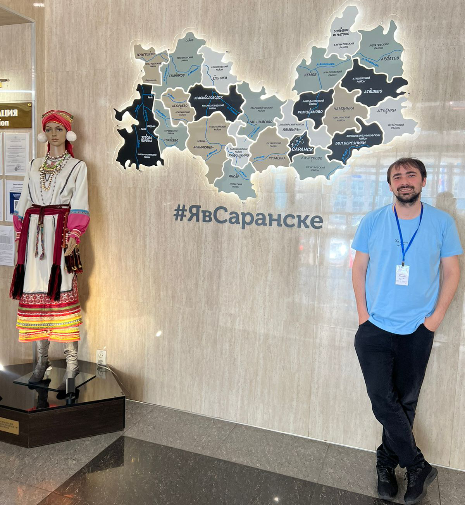
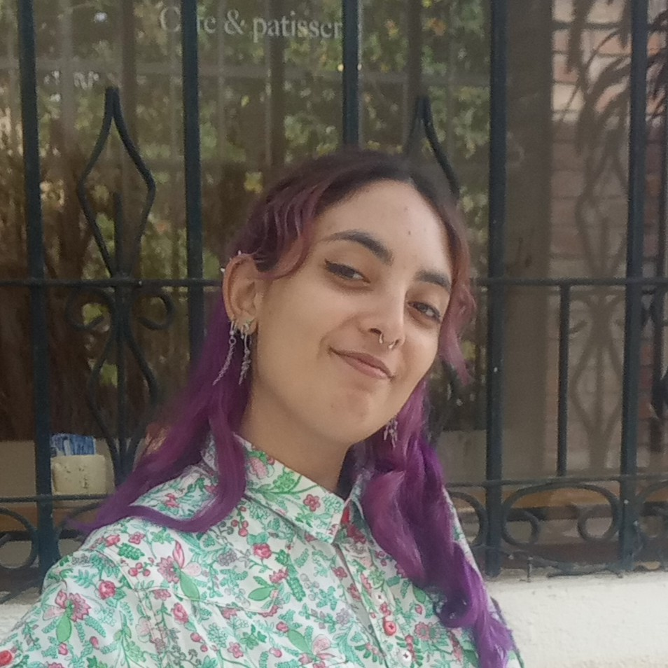
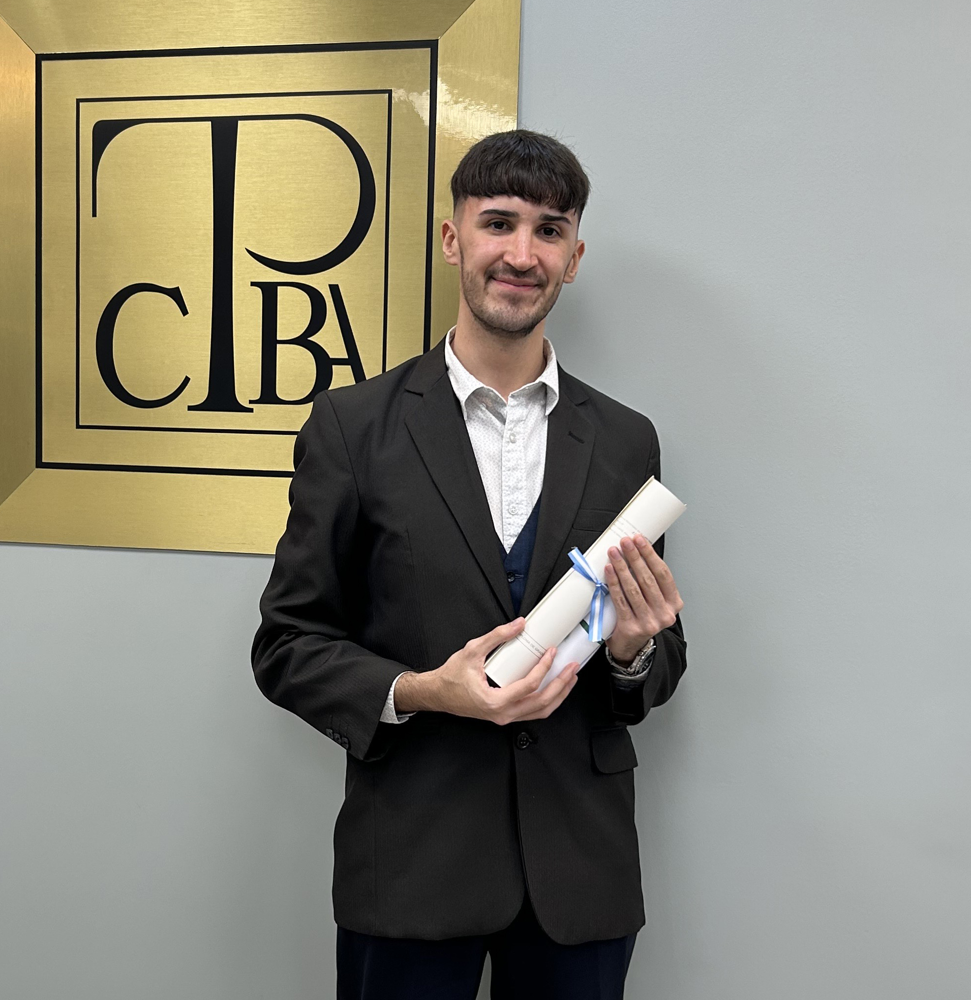
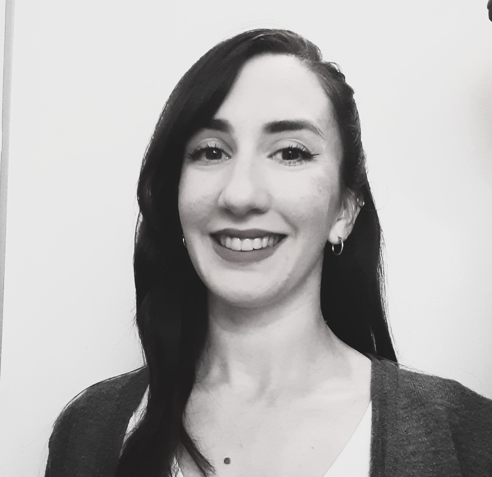

La cooperación académica internacional sigue siendo un pilar fundamental para la innovación y el enriquecimiento educativo y cultural en nuestras universidades. En este marco, la Universidad Nacional de Lanús ha consolidado por dos años consecutivos su participación en uno de los eventos académicos estudiantiles más importantes de la Federación Rusa: las «Lecturas de Ogariov» —cuyo nombre homenajea al destacado poeta ruso Nikolái Ogariov—, organizadas por la Universidad Estatal de Mordovia (MGU, por sus siglas en ruso).
La colaboración más reciente se materializó de manera inmensamente productiva en la mesa temática titulada «Traducción del futuro: sinergias entre la inteligencia humana y la artificial». La sesión híbrida, con ponentes participando tanto de forma remota como presencial —en la MGU— y moderada por la profesora Svetlana Chertoúsova —docente a cargo de la cátedra de Traducción en Idioma Español—, constituyó un espacio de diálogo transcontinental donde estudiantes y graduados de ambas instituciones profundizaron en los desafíos y oportunidades que plantea la era digital a la práctica traductológica.
El núcleo académico del encuentro lo constituyeron seis ponencias que abordaron, desde múltiples ángulos, la intersección entre tradición, cultura y tecnología. Entre ellas, destaco «Los nombres propios en las letras de la música actual: entre lo global y lo local en el diálogo intercultural», presentada por Anastasia Vorobiova; «Verbalización de significados implícitos en la traducción poética mediante redes neuronales artificiales», de Uliana Eliséieva; «Modelización cognitiva de la visión del mundo del autor en la traducción del discurso literario», de Anastasia Vinokúrova, y, por último pero no menos importante, «La traducción en la era digital: estrategias y recursos potenciados por inteligencia artificial», ponencia preparada por Fabrizio Latrechiano y Agustín Lafuente —ambos graduados de la UNLa— y presentada por este último, que sentó las bases críticas sobre el uso de la IA como herramienta al servicio del criterio humano del traductor.
Este programa evidenció no solo la diversidad de intereses académicos puestos en juego por los jóvenes investigadores, sino también, y al mismo tiempo, un enfoque común, más allá de las distancias y de las posibles divergencias en recorridos educativos o tradiciones teóricas: la traducción entendida como un acto cultural complejo, de intermediación y enriquecimiento entre ámbitos lingüístico-culturales diversos, y que debe incorporar las nuevas tecnologías a través del prisma de la interrogación continua y la mirada crítica.
Quien esto escribe actuó únicamente como enlace y facilitador de esta colaboración, seleccionando y orientando a los participantes de nuestra universidad, asistiendo en la logística de conexión a través de la plataforma Yandex Telemost (Яндекс телемост). Durante y después de la presentación de las ponencias, se produjo un rico intercambio en el que se formularon estimulantes preguntas sobre los temas de investigación delineados en los trabajos expuestos y se compartieron reflexiones sobre la realidad académica argentina y rusa. Cabe resaltar el altísimo nivel de dominio del español por parte de los estudiantes y profesores rusos, lo cual permitió que toda la mesa se desarrollara en nuestra lengua, hecho que en sí mismo habla del rigor y la proyección internacional de sus programas de estudio, y que permite avizorar un fructífero futuro de cooperación entre su universidad y la nuestra —e incluso extenderla a otras universidades de nuestro país.
El verdadero valor de estos intercambios se mide en la riqueza de la experiencia de sus participantes. Cito a continuación los testimonios de nuestros representantes en las «Lecturas», todos estudiantes y graduados de la UNLa, que reflejan el impacto profundo y duradero que la actividad ha tenido en su desarrollo académico y profesional:
Agustín Lafuente (graduado UNLa)
Tuve el placer de compartir con Julián un espacio muy gratificante, donde pude enseñar desde mi experiencia y, al mismo tiempo, aprender muchísimo.
Al inicio conversamos sobre la incorporación de la inteligencia artificial en el ámbito lingüístico y sobre cómo puede aportar recursos para facilitar y mejorar la traducción sin dejar de lado la mirada crítica del traductor. Con los estudiantes también exploramos la traducción de poesía, comparando la traducción humana con la automatizada, la transmisión de la cultura a través de la música y la traducción de términos propios de minorías culturales.
Los temas que surgieron fueron realmente enriquecedores y me permitieron adoptar una mirada más crítica al analizar aquellos elementos presentes en una cultura de origen que pueden resultar completamente desconocidos en otra. Representar fielmente esa realidad es esencial para visibilizar los elementos que constituyen y dan sentido a cada cultura.
Fue una experiencia hermosa compartir este espacio con alumnos tan interesados. Me sorprendieron gratamente sus ponencias. Muchas veces uno está acostumbrado a ser «la persona que aprende otro idioma», pero cuando sucede al revés, cuando otros se esfuerzan por aprender y perfeccionar el nuestro, la sensación es indescriptible.
Siento que pude brindar herramientas útiles para facilitar sus investigaciones cuando se enfrenten con términos o expresiones particulares, y también contribuir a que cuestionen la información que reciben y desarrollen una mirada crítica. A la vez, aprendí muchísimo de ellos. Sus aportes transformaron mi manera de analizar, por ejemplo, las canciones: aunque siempre presté atención a lo que escuchaba, nunca había aplicado una mirada analítica a la música, y eso me hizo pasar por alto aspectos fascinantes que revelan las realidades culturales de quienes escriben las letras.
Estoy sumamente agradecido con Julián y con la institución por haberme permitido ser parte de este espacio. Fue un placer haberme acercado más a una cultura tan interesante como es la cultura rusa y haber presenciado en primera persona la ponencia de alumnos con tanta vocación.
Julieta Pollina (estudiante UNLa)
Nuestra experiencia como disertantes para la Universidad de Mordovia fue, sin dudas, un gran logro académico, ya que representábamos a nuestra universidad frente a otro país. Habíamos trabajado arduamente en la elaboración de nuestro trabajo, «Consideraciones sobre el lenguaje jurídico y la traducción de contratos ES<>EN», que trataba sobre traducción jurídica. Poder compartirlo con estudiantes de traducción del otro lado del mundo fue increíble, no solo por poder abrirnos a otras culturas, sino también porque nos dejó ver también su nivel de preparación para entender nuestra lengua y sus ganas de aprender. También nos brindaron la oportunidad de incluir nuestro trabajo en las actas del evento, que pueden consultarse desde este enlace.
Tras la exposición, se produjo un intercambio muy enriquecedor en el espacio para preguntas en el que pudimos hablar sobre distintos temas inherentes a la profesión. Sin dudas, el espacio de intercambio con otras culturas resultó inmensamente enriquecedor.
Ailén Candia (graduada UNLa)
Mirando hacia atrás en el tiempo, ya ha pasado un año de nuestra participación como disertantes en la conferencia internacional «LIII Lecturas de Ogariov», organizada por la Universidad Estatal de Mordovia, en Saransk, Rusia. Esta experiencia nos resultó sumamente enriquecedora, no solo por el carácter internacional del evento, sino también porque las charlas e intercambios se realizaron íntegramente en español, lo que nos permitió conocer un poco de la sólida formación lingüística de las estudiantes al otro lado del mundo. Su dedicación al estudio de la traducción, aplicado a obras literarias, producciones audiovisuales y documentos jurídicos, quedó reflejado en el alto nivel de las ponencias. Nuestra presentación se tituló «Consideraciones sobre el lenguaje jurídico y la traducción de contratos ES<>EN», y se enmarcó en este contexto de análisis de la traducción especializada.
Si bien esta ha sido una experiencia única por diversos motivos, recuerdo y destaco especialmente el espacio de preguntas posterior a las exposiciones, donde las estudiantes de la Universidad de Mordovia manifestaron su interés por nuestra experiencia como argentinas y nativas hablantes de español, particularmente en relación con el uso de anglicismos en la vida cotidiana, temática que fue abordada en algunas de sus presentaciones. En lo personal, me enorgullece haber representado a mi país y a la Universidad Nacional de Lanús, compartiendo aspectos de nuestra cultura jurídica y del trabajo académico que se realiza en el Traductorado Público.
Celebro enormemente estos espacios de intercambio y agradezco la oportunidad que se nos dio de conectar con estudiantes de traducción del otro lado del mundo. Después de todo, ¿qué es la traducción, sino el intercambio entre culturas?
La participación en las «Lecturas de Ogariov» trasciende con creces el marco temporal del evento: se cristaliza en resultados académicos tangibles y en una proyección institucional estratégica de largo alcance. En primer lugar, el compromiso de publicación de todas las ponencias presentadas en las actas oficiales de la conferencia (como, según puede verse en los testimonios, ya ha sucedido con algunas de ellas) garantiza la difusión y el reconocimiento formal del trabajo investigativo de nuestros estudiantes y graduados, lo que le otorga una visibilidad real en el ámbito académico internacional.
Este logro se inscribe, a su vez, en un marco de continuidad y reciprocidad acordado entre ambas instituciones: no solo la convocatoria a estudiantes y graduados de la Universidad Nacional de Lanús a participar en las «Lecturas» se mantiene y se consolida ya prácticamente como una invitación anual inamovible de nuestros colegas en Saransk, sino que se abre la posibilidad, a la vez, de invitar a estudiantes y profesores de la Universidad de Mordovia a eventos internacionales en modalidad virtual o híbrida que pudieran organizarse desde nuestra casa de estudios. Este intercambio bilateral consolida una alianza académica que se fortalece con cada nueva edición. En última instancia, estos acuerdos concretos están tejiendo una red de colaboración más profunda y permanente, una comunidad emergente de jóvenes investigadores y profesionales en el campo de la traducción y los estudios interculturales, cuyas miradas complementarias desde el Cono Sur y Europa del Este enriquecen sustancialmente las perspectivas disciplinares y sientan las bases para iniciativas conjuntas futuras, basadas en el diálogo y la cooperación.
Sobre los autores

Julián Lescano es profesor, licenciado y doctorando en Letras por la UBA. Traductor e investigador especializado en literatura rusa, ha publicado traducciones de autores como Lev Lunts, Anna Ajmátova, Víktor Eroféiev, Iuri Lotman y Nikolái Gógol. Es colaborador de la revista Eslavia —donde ha publicado artículos sobre literatura rusa y soviética— y miembro fundador de la Sociedad Argentina Dostoievski. Ha participado como ponente en congresos en San Petersburgo, Moscú y Saransk. Ha dictado charlas y cursos sobre literatura rusa y argentina en librerías y centros culturales de la Ciudad de Buenos Aires y el conurbano bonaerense. Actualmente se desempeña como docente de Lengua Española en la Universidad Nacional de Lanús y como profesor de lengua rusa.

Ailén Candia es traductora pública en idioma inglés, recientemente graduada de la Universidad Nacional de Lanús. Su trabajo final se centró en lenguaje no sexista y traducción. Actualmente trabaja en la corrección editorial de las publicaciones del Foro de Pensamiento Crítico de la UTN-FRA y en la confección de los Diarios de Sesión del Honorable Concejo Deliberante de Avellaneda. Su paso por la UNLa le ha despertado un amor particular por el derecho y la traducción jurídica, área en la que le gustaría ejercer profesionalmente en el futuro.

Agustín Lafuente es traductor público y traductor científico-técnico en inglés, egresado de la Universidad Nacional de Lanús, y cuenta con una diplomatura en Traducción Audiovisual por la UTN. Tras iniciarse en la industria aeronáutica, decidió dedicarse por completo a la traducción, colaborando con agencias y clientes internacionales como Amazon, Google, FedEx y Mayo Clinic. Además, dicta clases de inglés a adolescentes y adultos, con un enfoque práctico centrado en la oralidad. Complementa su perfil con un certificado profesional en Gestión de Proyectos de Google.

Julieta Pollina es traductora técnica universitaria en idioma inglés por la Universidad Nacional de Lanús y estudiante del último año de la carrera de Traductorado Público en esa misma institución. Cuenta, además, con una Diplomatura en Subtitulado para Cine, Videojuegos y Personas con Discapacidad Auditiva por la UTN (2021). Actualmente se desempeña como docente y traductora independiente.